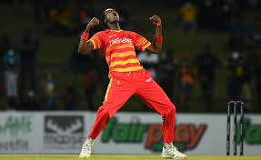
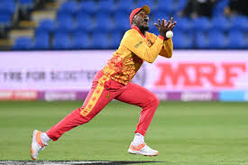

Zimbabwe T20I Team
Resilient team with passionate players.
About Zimbabwe T20I Team
Country: Zimbabwe
Home Ground: Various (e.g., Harare Sports Club)
Captain: Sikandar Raza
Coach: Justin Sammons
Zimbabwe’s T20I team is known for its fighting spirit and emerging talent, led by the dynamic Sikandar Raza.
Zimbabwe Players
Sikandar Raza (C)
Captain, all-rounder.
Craig Ervine
Batsman, middle-order anchor.
Sean Williams
Batsman, left-arm spinner.
Wessly Madhevere
Batsman, off-spinner.
Taino Muniyandi
Opener, rising star.
Ryan Burl
All-rounder, leg-spinner.
Clive Madande
Wicketkeeper-batsman, dynamic.

Blessing Muzarabani
Bowler, pace spearhead.
Richard Ngarava
Bowler, left-arm pacer.

Luke Jongwe
Bowler, medium-pacer.
Wellington Masakadza
Spinner, left-arm orthodox.